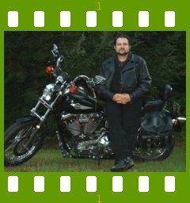

People of openSUSE: James Tremblay

openSUSE Education founder James Tremblay was caught up by ‘People of openSUSE’ to an interesting interview.
- Nickname: FXRSLiberty, (FX) Which is a model of Harley Davidson that was produced in limited quantities (800 + or -, mine is #636) in 1986 to commemorate the rebuilding of the statue of liberty on it’s bicentennial. I was pinned with the FX part of the nick because
- Homepage: http://en.opensuse.org/Education
- Blog: Haven’t started one yet
- Favorite season: Spring, summer and fall – all great motorcycle weather
- Motto: “let’s make a difference”. I believe that as members of the open source community we are in the unique position to do what we normally do (build and play with software) while without extra work help the students of the world by providing low cost access to computers as well as easily maintainable and accessible records of their achievements.
Please introduce yourself!
Personal bios are a pain, LOL. I’m 44, born Jan. 22 .1963 in Manchester NH US, I live in Newmarket NH as small town on the seacoast. I am the Director of Technology at the school department in our town. (glorified network admin). I have recently lost my wife and live with my dog. My 16 year old son lives with his mother a few miles away in Exeter NH. He is the light of my life, brilliant, happy, collected, he will outshine all of my life’s achievements before he is 30 I am sure of it!
Tell us about the background to your computer use.
I was a mess in High School, unsure of where I was going or what I wanted to do. I studied automotive mechanics for most of it, went into the Army to be a “heavy wheeled mechanic” and even went to a tech school for a degree. By the time I was 24 I knew this wasn’t gonna work, I hated being that dirty all the time. Since much of my study in the tech school was about electronic systems diagnosis I began to look at jobs that would let me fix things while staying fairly clean. I soon found my way into typewriters, faxes and copiers. I stayed in this line of work for about ten years, when one day as I was leaving an office in the winter time, I fell down a flight of icy stairs and broke my back. During the recovery process I learned that I would never be healthy enough to carry my tool box everyday and began looking for a new career. At this time the world of copiers was at the very beginning of introducing network printer functionality and I started thinking about becoming and expert in setting these things up. I learned that if I were going to do this I needed to learn network and desktop operating systems. Back to college at 32, yea! I studied to become a Novell CNE for version 3 and a Microsoft MCSE for NT 3.51. As time went on my skills as a Novell CNE became more and more rare so my career gravitated towards Novell when most of the industry was going the other way.
When and why did you start using openSUSE/SUSE Linux?
When Novell announced it’s purchase of Ximian I started studying again. Downloaded Redhat and got playing. When Novell announced it’s intentions toward SuSE, I downloaded version 8 installed it on my laptop and started working. At that time I was installing school networks for an IBM systems reseller and had been offered the position I am in now. Schools are very cost conscious and my new peers where all talking about using Linux, particularly Samba in the server room as well as k12ltsp in the classroom.
When did you join the openSUSE community and what made you do that?
After several months of study I found that there were projects all over the world that aimed to replace costly proprietary software with “FOSS” and having worked with business systems for so many years I understood ERPS and saw the potential to build one out of the many pieces in the community of FOSS projects. When Novell started openSUSE, I put 2 and 2 together and figured that if Edubuntu was doing so well and Novell still had a huge presence in schools that I could hopefully get people to see my point and help with the ERP style solution I had in mind.
In what way do you participate in the openSUSE project?
Since then I have convinced a few key players to help with producing a repository and now an ADD-ON CD of educational solutions to run on openSUSE\SLE products. I have also been working with the KIWI thin client team to help reproduce the LTSP project on the SUSE line of products. I am also the founder of the openSUSE in schools project located at http://en.opensuse.org/Education. My hat is off and I give a deep bow to Lars Vodgt. He is the lead developer openSUSE EDU-CD project and a personal hero. I also wish to give many thanks to CyberOrg the lead developer of the LTSP on openSUSE project.
What especially motivates you to participate in the openSUSE project?
My love for my Son and what I can do to help him and other students to have access to low cost effective computer technology.
What do you think was your most important contribution to the openSUSE project/community or what is the contribution that you’re most proud of?
I am very proud of the work and projects that the openSUSE \ Novell people have graciously allowed me to host on the site and participate in. All the really important parts of what is being done is from the people who volunteer on my project, all I do is political , I am a pest to everyone who has a skill I need to further these projects and I don’t give up until I get them to help ;)
When do you usually spend time on the openSUSE project?
More to the point when don’t I. It may seem to some of my team mates that I have been away for a few months, but I really have been working with the upstream developers that would be contributing to the ERP portion of the EDU-CD and I will be bringing some important pieces back to the project in the next few months.
Three words to describe openSUSE? Or make up a proper slogan!
Open, useful and reliable.
What do you think is missing or underrated in the distribution or the project?
Nothing really there are hundreds of facets to this and any Linux OS and in some way the SUSE community is addressing all of them.
What do you think the future holds for the openSUSE project?
I think that the openSUSE build service is going to take RPM distributions to the level of usability known now only in the Windows community and in doing so become the pinnacle of FOSS distributions.
A person asks you why he/she should choose openSUSE instead of other distribution/OS. What would be your arguments to convince him/her to pick up openSUSE?
Well if your going to use something new, would you use the imitator or the original? SuSE has been the place where so many of todays advancements in desktop Linux have come from. For years SuSE practically owned the KDE desktop and so much of what it does was developed or contributed to under the SuSE flag.
Which members of the openSUSE community have you met in person?
Well I was at Brainshare last year and met quite a few. I don’t want to insult any of them by misspelling or incorrectly naming them, but I would like to thank them all for their support.
How many icons are currently on your desktop?
How about how many desktops do I have Icons on. Which task set do you want to talk about? Usually 16 -20.
What is the application you can’t live without? And why?
Evolution. I am a talker in computer terms this means e-mail!
Which application or feature should be invented as soon as possible?
A “sysprep” type tool for mas deployment. In my work image deployment is the only way to keep ahead of the many spyware/ malware/ mischiefs put to the computers at the students fingertips.
Which is your preferred text editor? And why?
gedit. I just learned it first.
Which famous person would you want to join the openSUSE community?
Linus.
Which computer related skills would you like to have?
AMP stack programming.
The Internet crashes for a whole week. How would you feel, what would you do?
Would I still be sane at the end of that week?
Which is your favorite movie scene?
Hmmmm?
Star Trek or Star Wars?
Star Trek and “SEVIN OF NINE”.
What is your favorite food and drink?
New York style Pepperoni Pizza and a Coke.
Favorite game or console (in your childhood and nowadays)?
Never did the console thing, but I played tons of Galaxian at the arcade.
Which city would you like to visit?
Paris.
What is your preferred way to spend your vacation?
Bass Fishing.
Someone gives you $1.000.000. What would you do with the money?
Fishing Tackle.
If traveling through time was possible, when would we be most likely to meet you?
Sometime in the future where a life aboard a vessel like the Enterprise would be possible.
There’s a thunderstorm outside. Do you turn off your computer?
If I can, but my UPS better do it for me!
Have your ever missed an appointment because you forgot about it while sitting at your computer?
ALL THE TIME. Doing it now I bet.
Show us a picture of something, you have always wanted to share!
(none)
You couldn’t live without…
My Harley, Cabin fever is the worst thing ever!
Which question was the hardest to answer?
The one about the picture of things I wanted to share.
What other question would you like to answer? And what would you answer?
What would you ask of the openSUSE community? Please help with the EDU-CD by creating build packages for, testing and reviewing the software in the EDU wish list and repositories.